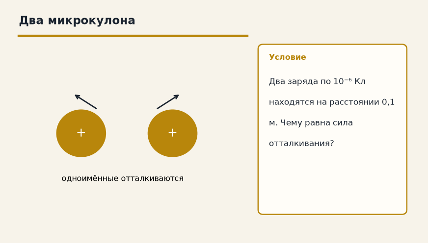
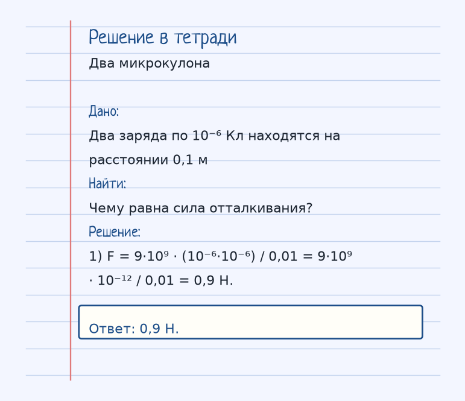
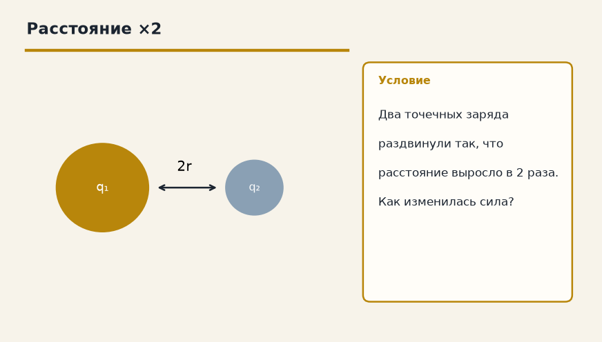
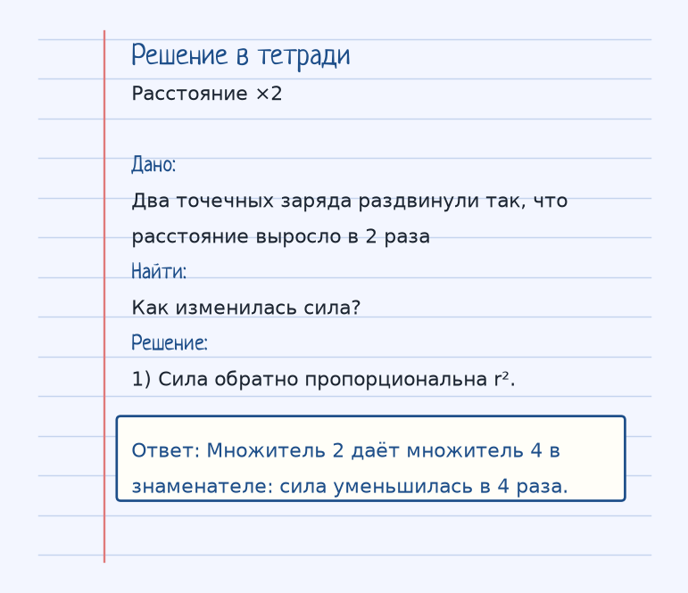

Тема «Закон Кулона»: физический смысл, единицы величин, типичные ошибки и два разобранных примера.

Схема к условию.
Физический смысл
Сила взаимодействия двух точечных зарядов прямо пропорциональна произведению их зарядов и обратно пропорциональна квадрату расстояния между ними. Это главный закон электростатики.
Закон Кулона — про два точечных заряда, когда размером тел можно пренебречь по сравнению с расстоянием. F = k·|q₁·q₂| / r², k = 9·10⁹ Н·м²/Кл². Модуль берём, а направление решаем отдельно: плюс с плюсом и минус с минусом отталкиваются, разные знаки притягиваются.
Квадрат расстояния работает как в тяготении. Расстояние увеличили в 2 раза — сила упала в 4 раза. Оба заряда увеличили в 2 раза — произведение выросло в 4 раза, сила тоже.
В численном примере карточки q = 10⁻⁶ Кл, r = 0,1 м: знаменатель r² = 0,01, произведение зарядов 10⁻¹², и F = 9·10⁹ · 10⁻¹² / 0,01 = 0,9 Н.
Формула и единицы
F = k · |q₁ · q₂| / r²
k = 9 · 10⁹ Н·м²/Кл²
k = 9·10⁹ Н·м²/Кл². r — расстояние между точечными зарядами.
Пояснение
Как гравитация, но только работает как для притяжения, так и для отталкивания. Если заряды увеличить в 2 раза, сила вырастет в 4 раза. Если расстояние увеличить в 2 раза, сила упадет в 4 раза.
Как гравитация по форме 1/r², но здесь есть и притяжение, и отталкивание. Заряды ×2 — сила ×4, расстояние ×2 — сила /4.
Типичные ошибки
Не забудь квадрат расстояния. И не подставляй r в сантиметрах: в СИ нужны метры, заряды в кулонах.
Разобранные примеры. Решение каждого открывается отдельно.
Разбор 1
Два микрокулона
Два заряда по 10⁻⁶ Кл находятся на расстоянии 0,1 м. Чему равна сила отталкивания?
На схеме только условие.
Порядок записи: данные, единицы СИ, искомая величина, ход решения, ответ.
Дано. Два заряда по 10⁻⁶ Кл находятся на расстоянии 0,1 м
В СИ.
Найти. Чему равна сила отталкивания?
Решение.
F = 9·10⁹ · (10⁻⁶·10⁻⁶) / 0,01 = 9·10⁹ · 10⁻¹² / 0,01 = 0,9 Н.
0,9 Н.

Разбор 2
Расстояние ×2
Два точечных заряда раздвинули так, что расстояние выросло в 2 раза. Как изменилась сила?

На схеме только условие.
Порядок записи: данные, единицы СИ, искомая величина, ход решения, ответ.
Дано. Два точечных заряда раздвинули так, что расстояние выросло в 2 раза
В СИ.
Найти. Как изменилась сила?
Решение.
Сила обратно пропорциональна r².
Множитель 2 даёт множитель 4 в знаменателе: сила уменьшилась в 4 раза.

Разбор 3
Расстояние втрое
Расстояние между точечными зарядами увеличили в 3 раза. Во сколько раз изменилась сила?
На схеме только условие.
Порядок записи: данные, единицы СИ, искомая величина, ход решения, ответ.
Дано. r₂ = 3 r₁
В СИ.
F ~ 1/r².
Найти. F
Решение.
3² = 9, сила уменьшилась в 9 раз.
Уменьшилась в 9 раз.
Разбор 4
Оба заряда вдвое
Каждый заряд увеличили в 2 раза, расстояние то же. Как изменилась сила?
На схеме только условие.
Порядок записи: данные, единицы СИ, искомая величина, ход решения, ответ.
Дано. q → 2q
В СИ.
Сила пропорциональна произведению зарядов.
Найти. F
Решение.
Произведение выросло в 4 раза.
Выросла в 4 раза.
Разбор 5
Постоянная
Чему равен коэффициент k в законе Кулона?
На схеме только условие.
Порядок записи: данные, единицы СИ, искомая величина, ход решения, ответ.
Дано. Закон Кулона в СИ
В СИ.
k = 9·10⁹ Н·м²/Кл².
Найти. k
Решение.
k = 9·10⁹ Н·м²/Кл².
9·10⁹ Н·м²/Кл².
Разбор 6
Метры
Заряды дали в кулонах, расстояние в сантиметрах. Что сделать перед подстановкой в F = k q₁ q₂ / r²?
На схеме только условие.
Порядок записи: данные, единицы СИ, искомая величина, ход решения, ответ.
Дано. r = 5 см
В СИ.
5 см = 0,05 м.
Найти. Перевод
Решение.
Расстояние переводят в метры.
Перевести r в метры.
Разбор 7
Точечные
Для каких зарядов записывают школьную формулу Кулона?
На схеме только условие.
Порядок записи: данные, единицы СИ, искомая величина, ход решения, ответ.
Дано. Заряды малы по сравнению с расстоянием между ними